棋牌游戏近年来飞速增长可谓有目共睹，但随着发展而带来问题也不少，同质化严重，让竞争愈演愈烈。无论存在怎样的争议，棋牌游戏市场正在崛起都是一个不争的事实。棋牌游戏本身的生命力毋庸置疑的，数量庞大的民众基础、简单方便的游戏方式、传统体育与移动网络的结合，这些都使得棋牌游戏在网络游戏市场中有一定的地位。
目前的棋牌游戏市场是个什么样的情况呢？DataEye&S+近日发布了《2017年手机棋牌游戏研究报告》，对棋牌市场进行了分析。
一、棋牌游戏行业的市场数据解读
手机棋牌游戏持续增长，市场规模达到28亿元
棋牌游戏作为一个经典游戏类型，拥有大量熟悉规则的线下用户，随着智能手机进一步普及，移动游戏市场规模连续多年保持快速增长，手机棋牌游戏也进入了快速增长时期。数据显示，2016年手机棋牌游戏的市场规模达到28亿。
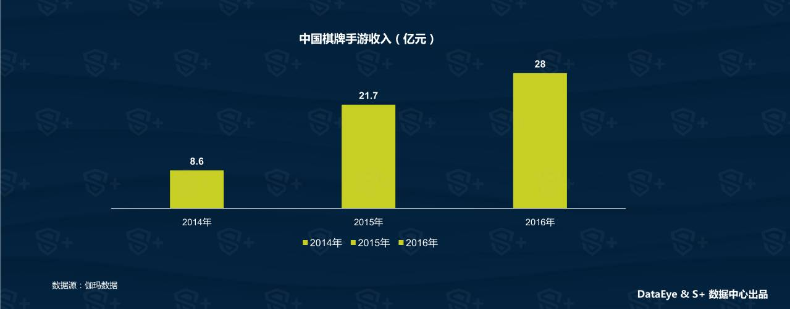
风口上的地方棋牌游戏成为行业新焦点
1998年，随着联众游戏上线，中国线上棋牌游戏正式起步。早期的棋牌游戏是主打全国性，以陌生人竞技为主的休闲娱乐平台，如联众、QQ游戏大厅。随着JJ比赛推出比赛模式，棋牌变得更具竞技性，而各棋牌品牌开始通过棋牌比赛、影游联动等方法去推广棋牌竞技文化。
从2016年开始，众多中小CP通过深耕大平台尚未完全覆盖的地方棋牌，推出主打熟人游戏的“房卡模式”，从QQ游戏大厅、JJ游戏大厅等大平台突围而出，取得了不错的成绩，并引来了资本的追逐。
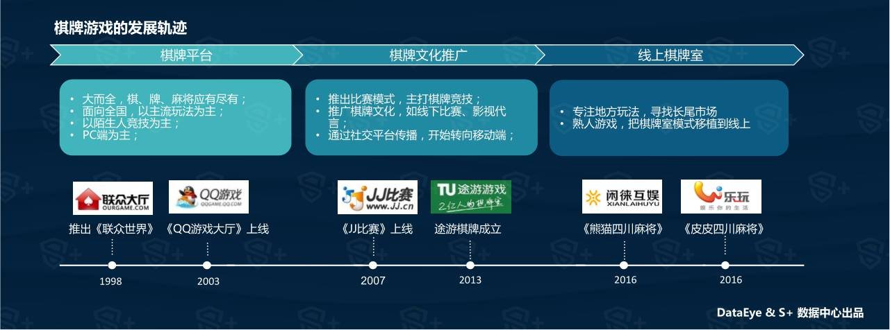
手机棋牌游戏有着庞大的下载量
与其他类型的手游相比，棋牌游戏尽管玩法创新空间较少，但玩法固定，有着广泛的受众，用户熟悉规则且玩法不会过时 。因此庞大的受众以及较长的生命周期让棋牌游戏拥有庞大的下载量。
地方棋牌由于更多选择通过线下渠道推广，因此地方棋牌游戏在主流应用商店的上架率不高，下载量也不突出。
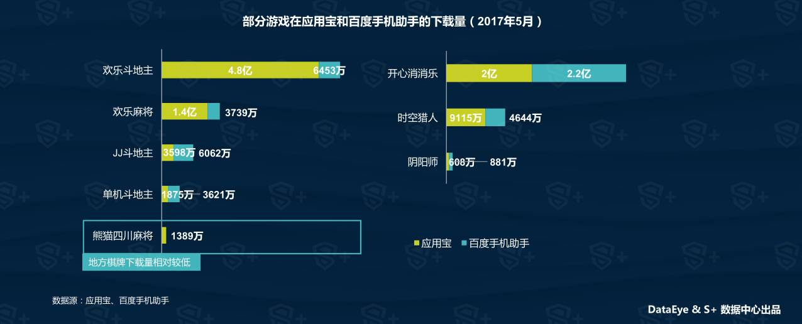
手机棋牌游戏的活跃度较高
2016Q2-2017Q1移动游戏的DAU/MAU平均值为0.11；其中棋牌游戏的DAU/MAU为0.15，与卡牌游戏持平，略高于2016年大热的角色扮演游戏。（DAU/MAU，一般用于反映APP的活跃程度）
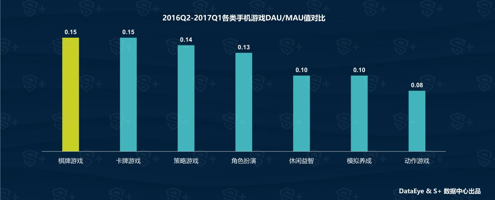
手机棋牌游戏有较好的用户留存
手机棋牌游戏用户的忠诚度较高。2016Q2-2017Q1手机棋牌游戏的次日、七日和月留存率，均领先其他主流类型游戏。
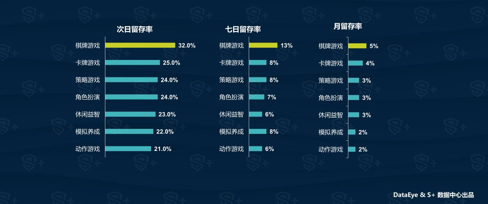
手机棋牌游戏的用户付费率优于移动游戏平均水平
在付费率方面，棋牌游戏表现优于移动游戏平均水平，达到3.77%。
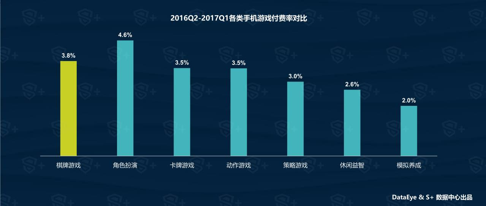
二、地方棋牌游戏的发展
地方棋牌品类多、单品类用户基数小，棋牌平台覆盖率低
全国性的棋牌游戏，规则全国通用，用户量大，目前已进入饱和状态，竞争激烈，这一市场的主要参与者包括腾讯、JJ比赛等；由于棋牌游戏的发展是从线下到线上的过程，不同地区对棋牌种类、规则的偏好也不同。
地方性棋牌游戏产品种类丰富， QQ游戏大厅等全国性的大平台无法完全覆盖众多地方棋牌玩法。地方棋牌尽管单品类用户基数小，但用户总量庞大；因此成为众多中小CP的“蓝海”；地方皮牌在产品设计上突显地方特色，包括采用地方特有规则，方言语音配音，地方特色的UI设计等。而用户对本地玩法规则非常熟悉，平均游戏水平也相对更高。
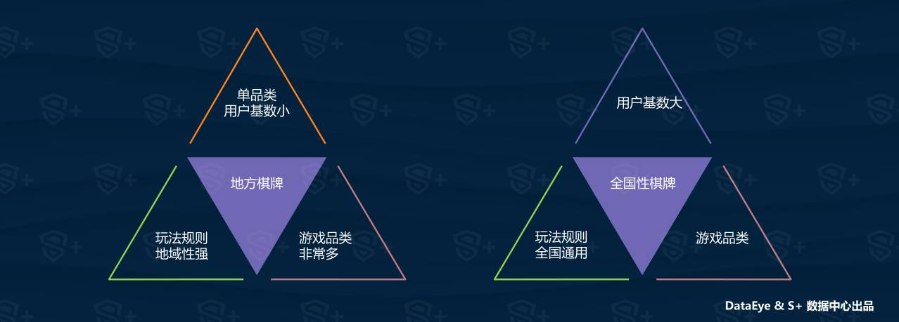
智能手机和移动支付的普及带来更多的用户
众所周知，地方棋牌游戏的主要用户来自于小城市、小城镇甚至农村地区的基层民众，而他们对地方棋牌的需求，主流棋牌大平台并不能很好满足。过去，这部分潜在用户由于网络普及率较低、难以触及而被忽视。
数据显示，2016年第四季度，2016年四季度，全国移动宽带普及率为71.2%，用户达到9.84亿；截至2016年12月，全国手机支付用户达到4.69亿，与去年同期相比，增长率为31.2%。随着智能手机、移动宽带以及移动支付的进一步普及，更多的中小城市及农村地区的民众可能通过智能手机连接互联网；而移动消费习惯的养成，让人们比过往更愿意使用手机进行娱乐消费，以满足他们的生活、娱乐需求。
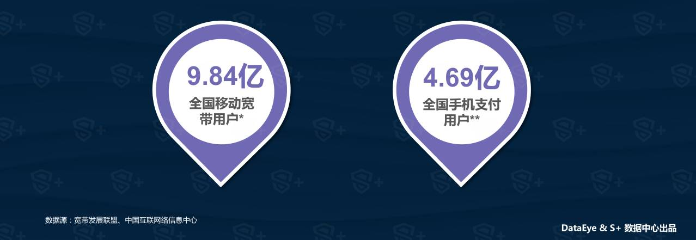
房卡模式与地方棋牌游戏结合成为中小CP的突破口
房卡模式是棋牌游戏的重要创新，与传统售卖游戏币的棋牌游戏相比，房卡模式的盈利模式是售卖房卡，不存在实体货币与虚拟货币兑换，很大程度上规避了由银商等角色带来的赌博风险。
房卡棋牌游戏基于熟人关系，开房组局都是基于社交应用的“好友”关系，玩家通过购买“房卡”创建游戏房间，然后通过微信或者QQ将房间号分享给好友，邀请好友进入房间游戏。总的来说，房卡模式集合了线上棋牌的优势，随时约局，利用空闲的碎片化时间就可来一局，同时又集合了线下棋牌室的优点，熟悉的地方玩法，熟人约战，自己规定输赢值，不存在系统吃分。
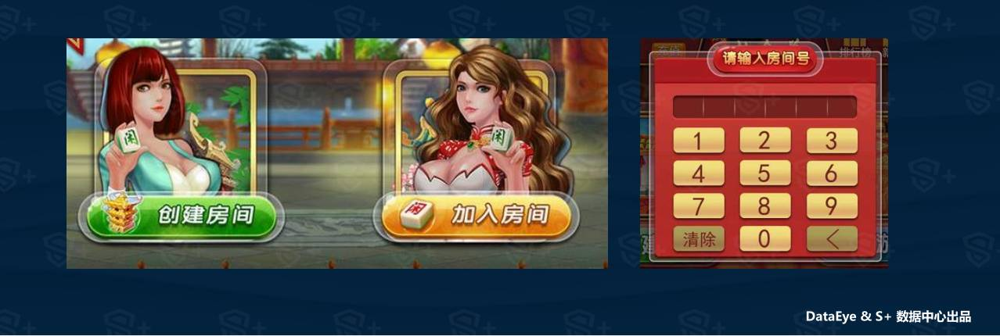
地方棋牌游戏的推广渠道下沉，以线下推广为主
房卡模式的棋牌，用户大部份上都是来自于更为广泛的中小城市和农村地区，甚至包括移动互联网刚开始普及的市场，很多地区是使用互联网流量模式难以触及的，因此地推和微商是目前主要的运营渠道。
地推主要通过在当地棋牌室、投注站等地进行广告分发，或与地方的媒体、电信等企业/部门进行合作推广。
微商主要通过代理，利用代理分销体制，通过线下熟人介绍、朋友圈推广等方法发展玩家，销售房卡获得差价利润，或与线下棋牌室类似，“群主”为用户提供免费房卡，用户为群主提供“茶水钱”。
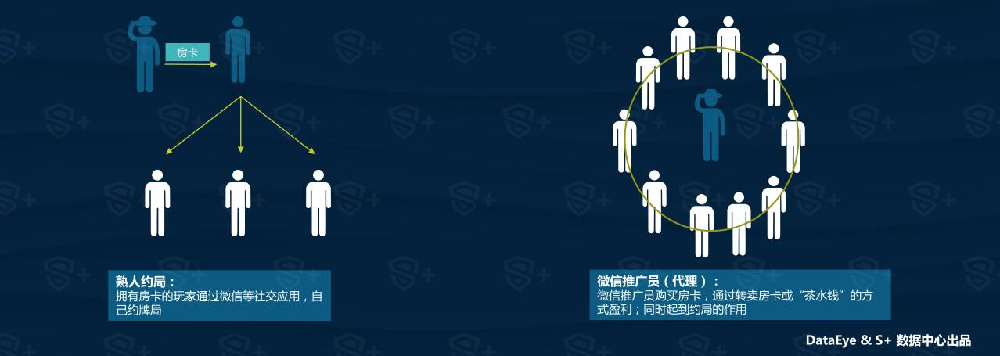
地方棋牌游戏强大的盈利能力吸引了资本的关注
从2016年下半年起，越来越多的游戏企业在通过收购、并购的方式将地方性棋牌游戏纳入自己的经营版图。地方棋牌的独特用户群体，以及强大的盈利能力，吸引了大量资本涌入棋牌游戏行业。
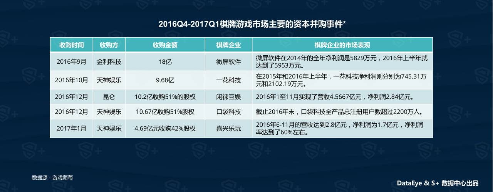
统一规则的制定让地方棋牌更有利于推广
淮安掼蛋产生于上个世纪60年代，因其具有简单易上手、讲究团结协作、技战术组合千变万化等特点而迅速在民间流行开来。不过，自掼蛋诞生以来，规则一直不是很统一，各地都有自己的打法。在2017年4月，江苏省社会体育管理中心出台了《江苏省掼蛋竞赛简易规则》，这也让掼蛋有了一个统一的规则标准。
统一规则的制定扩大了地方棋牌的受众，增强了地方棋牌的影响额，更有利于通过赛事等方法推广，也更容易吸引棋牌大平台的关注。
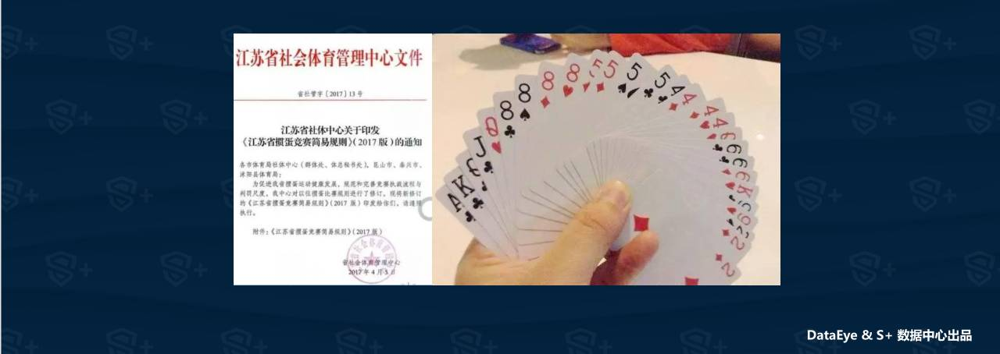
地方棋牌游戏也有严格的政策监管
目前地方棋牌最主要的政策风险主要来自赌博和传销。
房卡模式规避了被作为筹码的虚拟币，游戏结果以不可购买的积分结算。但积分易被利用，成为牌友赌博的筹码，而一些代理则通过押金等方式提供赌场信誉；由牌友私定积分的价格，在牌局结束之后通过移动支付实时转账。由于牌友之间只存在转账关系，而平台只涉及纯娱乐，在现有政策下巧妙地规避了赌博风险。
房卡模式的游戏采用了类似微商的代理分销体制。一级代理从官方低价购买大量房卡，加价卖给二级代理，二级代理拿到房卡以后还再提价卖给三四级代理；这样的模式，就特别容易形成传销当中常见的积压，需要寻找众多的下家来接盘。
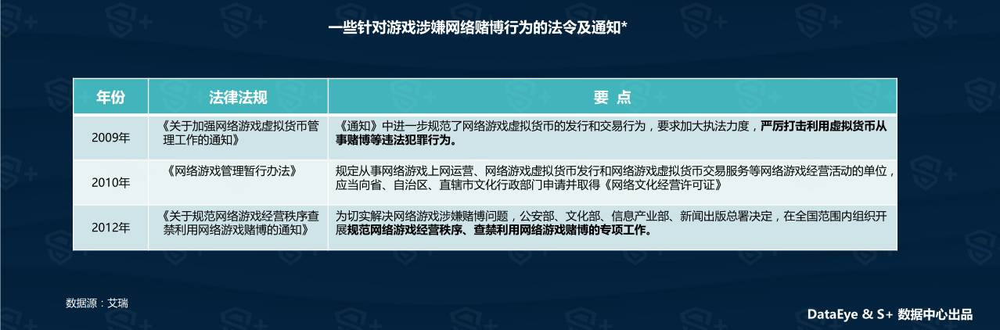
三、棋牌游戏玩家的用户画像
棋牌游戏用户持续增长，用户有较强的付费能力
2016年，棋牌游戏用户规模达2.58亿，移动端是主要的增长点。相对而言，棋牌游戏用户有较高的学历和收入，付费能力较强。
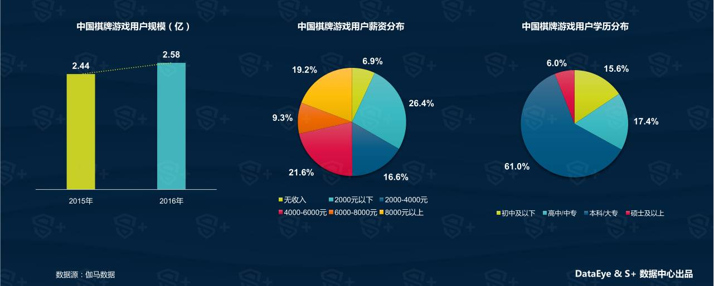
用户主要在晚上玩手机棋牌游戏，游戏时间超过半小时
相对而言，棋牌游戏比其他手游更为耗时，超过80%的棋牌游戏用户的日均游戏在30分钟以上；
中国地方特色游戏用户玩棋牌游戏的时间大部分都超过半小时，其中1-2小时的用户占比最高。相比于其他游戏，棋牌游戏是耗时的重点，核心用户在非棋牌游戏上的耗时更少。
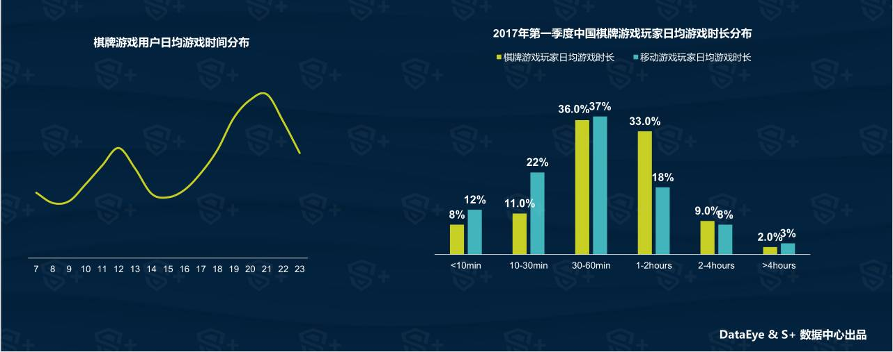
手机棋牌游戏用户主要集中在沿海和四川
棋牌用户主要分布在沿海和四川等互联网人口大省，而在地方棋牌玩法丰富的南方内陆省份，也集中了大量的棋牌玩家；
超过50%的棋牌用户分布在传统互联网渠道较难触及的中小城市及农村地区，分发和推广更多需要当地的渠道资源；
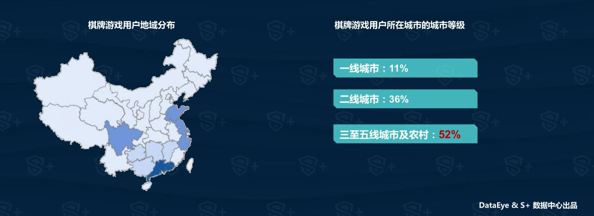
棋牌用户的分类
根据用户对棋牌游戏的博彩性以及娱乐性的看法，棋牌用户可以分为以下几种类型。
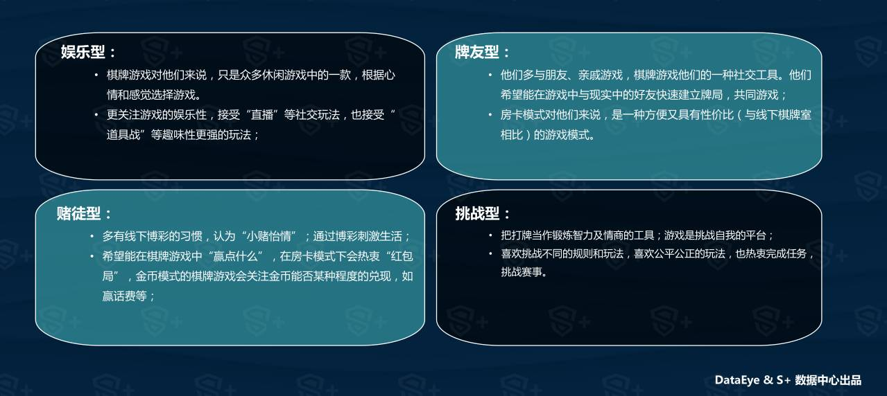
手机棋牌游戏用户对游戏的诉求
不同类型的用户有不同的诉求，CP可以通过了解用户的特点和需求，明确产品定位，有针对地对产品的玩法功能，运营策略及推广手段进行调整，构建差异化市场。
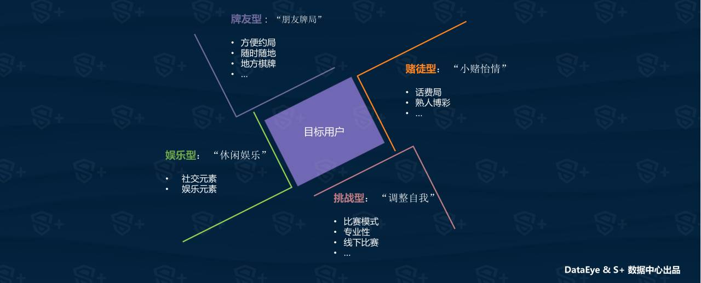
四、手机棋牌游戏的发展趋势
手机棋牌游戏的发展趋势（一）：地方棋牌竞争激烈
全国性棋牌平台将加入更多地方棋牌，目前腾讯《QQ游戏》APP已经推出了多款可以与PC端互通的地方性棋牌。大型棋牌平台也有更多的资源通过组织比赛等方式推广产品，拓展用户。
地方性棋牌游戏产品种类丰富，就麻将来说，可能每个县都有数种特有的玩法。对于众多从事地方棋牌游戏的中小CP来说，仍可通过开发更多的细分市场以避免与大平台直接竞争，但地方棋牌的入局者众多，中小CP之间的竞争将变得激烈。
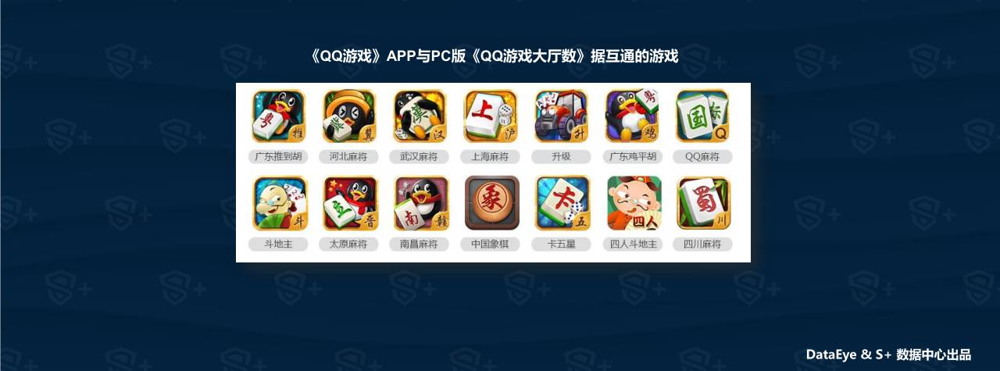
手机棋牌游戏的发展趋势（二）：融合更多玩法
由于规则相对，棋牌游戏一直被认为创新空间较小，目前大部分棋牌游戏均以还原线下玩法为主，因此产品显得雷同。然而，棋牌游戏也有大量的休闲玩家，他们更享受游戏的乐趣，“棋牌+X”或大有可为
跨界：目前已有部分棋牌游戏产品尝试与当前火热的直播行业结合，并取得不错的成绩，或者各CP还可以考虑棋牌形式的跨界，如参考大热的《Pokémon GO》，尝试加入LBS或AR元素等；
加入更多游戏元素：目前棋牌游戏主要还是服务于喜欢博彩或比赛的用户，强调公正性，但也可以考虑换一个思路，增设“大牌”几率较大的娱乐玩法，或加入“换牌道具”等的道具增强游戏的趣味性；
与其他游戏联动：可以尝试让棋牌游戏与RPG等游戏联动，以增加其游戏性；
影游互动；
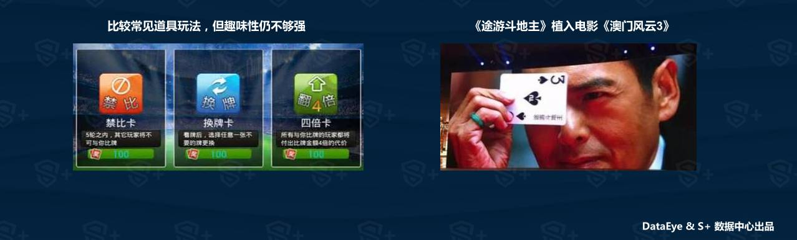
发展趋势（三）：渠道是中小CP在地方棋牌游戏成功的关键
目前地方棋牌市场的竞争已经非常激烈，据统计，截至2017年4月份，光一个湖南省就有近5000家棋牌游戏公司将服务器托管在某著名云服务器上，很多地方都有两款以上的同类型游戏在运营。因此能否掌握有效的渠道资源是地方棋牌游戏成功的关键，掌握了更多渠道，游戏才能更好地触达玩家群体。
这种渠道包括：当地的网吧资源、报纸分发渠道资源、商场的活动资源、当地公众号自媒体资源，或者是当地的强人脉（代理）资源，当地某类麻将或纸牌的狂热爱好者等。
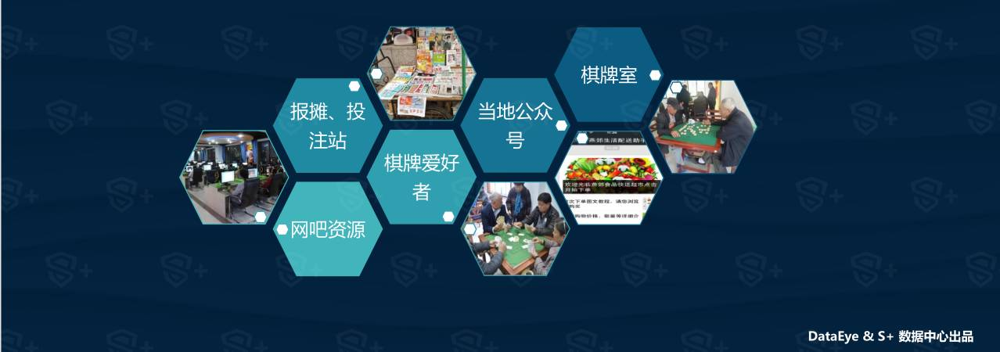
纹桃科技从事棋牌游戏开发13年，想开发一款迅速盈利的棋牌游戏，欢迎咨询电话热线：18711739336
了解更多棋牌游戏行业信息：在线咨询>>


游戏产品
PRODUCTS

售后服务
SERVICE

技术支持
TECHNOLOGY

运营指导
OPERATING